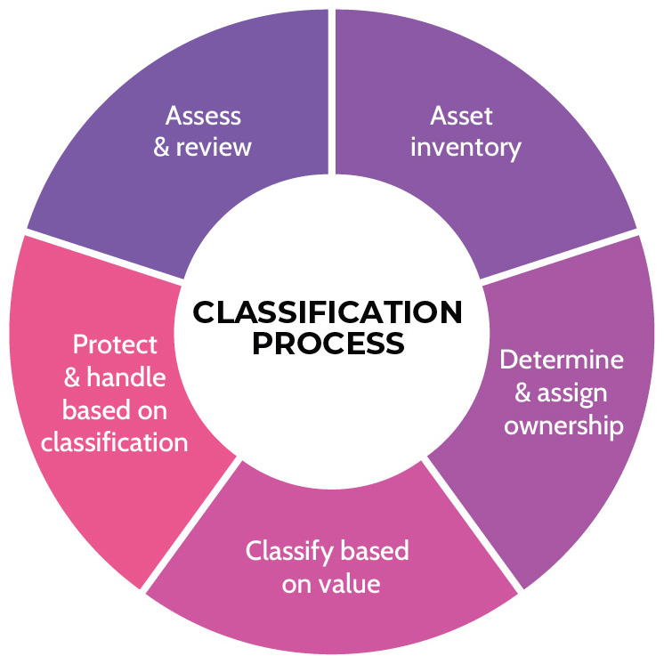
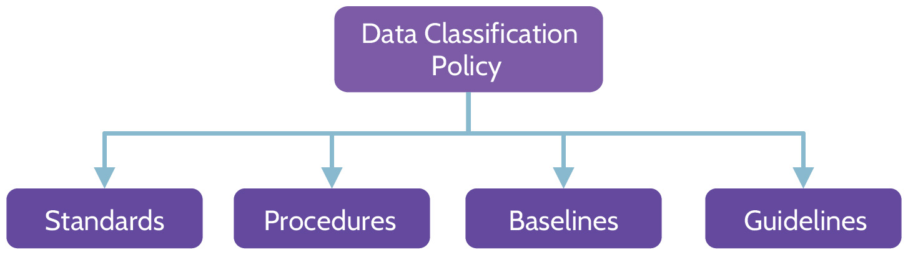
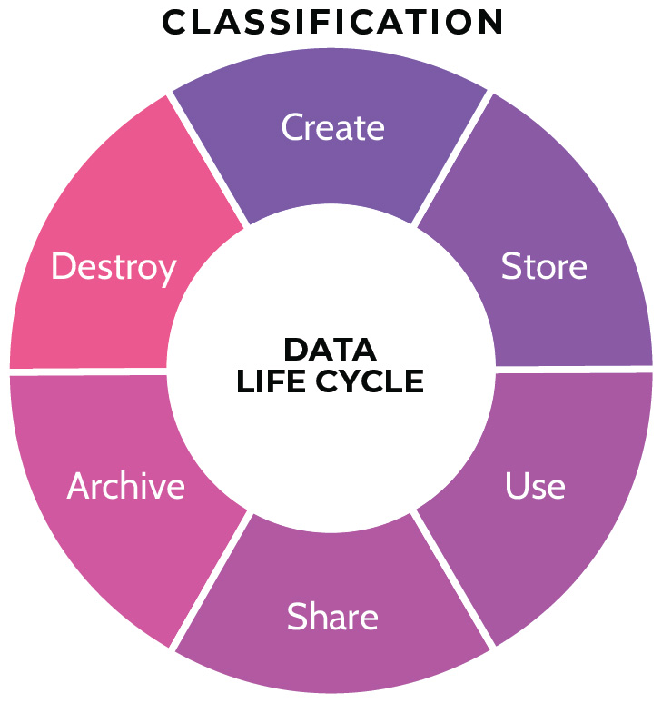
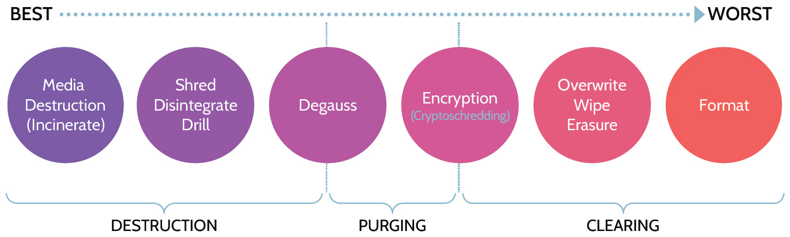
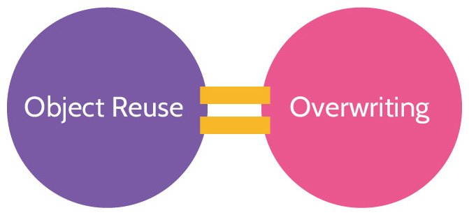
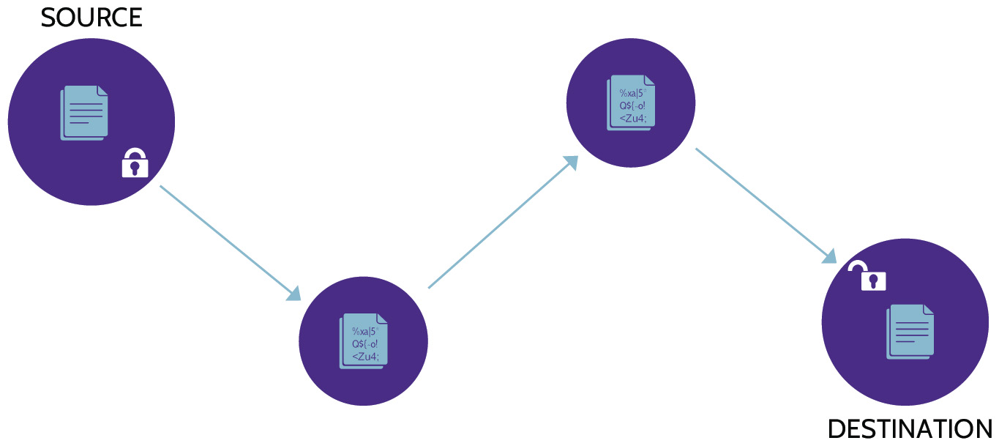
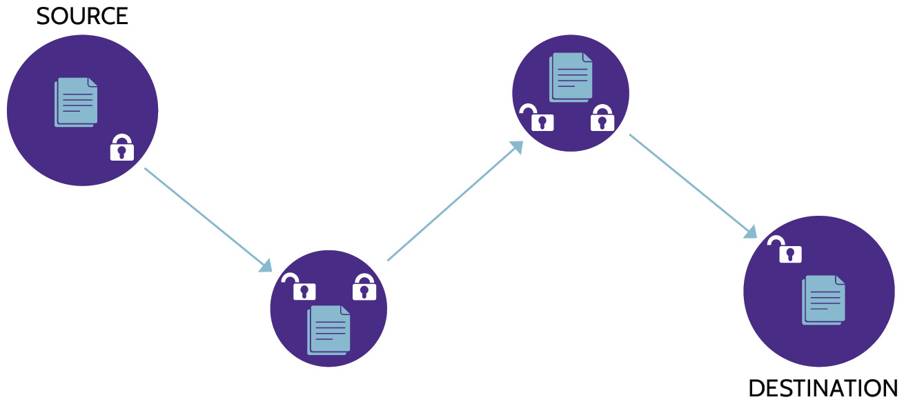
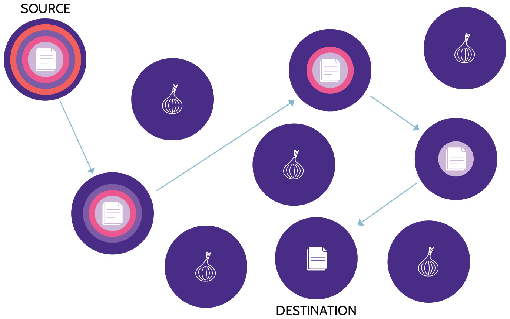

DOMAIN 2
ASSET SECURITY
Asset security includes the concepts, structures, principles, and controls aimed at protecting assets-anything that represents value to the organization.
Security professionals need to be vigilant about asset protection. Even one minor vulnerability can leave a whole system exposed to a security breach, causing an organization to lose money and data, and possibly even compromise the entire company. Good security professionals cover their bases with a systematic approach to asset security: Know what you have, classify it, and protect it based on its classification level, which indicates its value to the organization. You can't protect something if you don't know it's there and the value it represents to the organization.
The concept is simple, but the execution is often incredibly difficult, especially for larger organizations with a lot of assets. Domain 2 gives an overview of the steps involved in asset security to address some of the issues that security professionals often encounter while implementing them.
2.1 Identify and classify information and assets
2.1.1 Asset Classification
CORE CONCEPTS |
Asset classification policies, procedures, and processes help achieve proper protection of assets |
As we learned in Domain 1, protection of assets should always be based on the value of the asset. We also said that the owners of the asset are always in the best position to understand the true value that the asset represents to the organization.
One of the most common problems that organizations face is that they don't know what assets they have or how valuable those assets are. For example, a department manager might have signed up for a cloud service for use by their team, then forgot about it over time, or signed up for the service but never assessed the value of the data stored in it. This leaves the organization vulnerable, particularly if there's valuable data that isn't being protected adequately. Organizational policies, procedures, and processes should be put in place to address the requirement to protect valuable assets. An asset classification program and inventory system would be the starting point that organizations can use to address and properly protect assets. In a large multinational organization, this can be a huge undertaking given the many types of assets within an organization. Additionally, the fact that assets can be created, purchased, rented, or taken over makes the task even more challenging.
In Domain 1, the concept of assets was introduced in addition to balancing the cost of their protection with their value to the organization. In other words, protecting assets should always be based on the value of the asset, and therefore, for security to be an enabler, protecting assets should always be cost-effective. As the value of an asset increases, so does the effort invested in protecting it. Less valuable assets might not warrant costly protection. The first step in asset classification addresses this issue with an asset classification system, a series of classes that represent the level of protection that each type of asset requires. For example, an asset that is classified as "top secret" or "proprietary" is going to have significantly more value than an asset classified as "confidential" or "public." The security team must apply a valid and cost-justified baseline of controls for each level of classification; these controls will be used to create protection baselines for each classification level.
Classification is driven by the value of the asset
Proper asset classification ensures that assets receive an appropriate level of protection based on the value that they represent to the organization. Asset classification can be defined as assigning assets the level of protection they require, based on their value to the organization.
Once assets are captured in an inventory system, the next step is to identify the owners of each asset. Once the asset classification system is in place and asset owners have been identified, security can then work with owners to assign assets an appropriate classification level that determines how the assets are protected. It's important to note that owners are ultimately accountable for ensuring their assets are classified and thus protected appropriately. In fact, it's not uncommon for owners to challenge ownership to avoid being accountable. When this happens, an organization's governance committee must set the tone from the top, stating that owners must own the asset, and the security function is there to support the implementation of suitable controls. In short, assets need to have an accountable owner to ensure proper controls are applied (more on this in section 2.2).
Information Classification Benefits
The information classification process provides several benefits, including:
Identification of critical information: identifies information that the organization considers critical to business success.
Identification of sensitivity to modification: classification helps identify data that must only be modified in specifically authorized ways.
Commitment to protect valuable assets: creates awareness among users that the organization is committed to protecting assets from unauthorized access.
Commitment to confidentiality where applicable: classification helps ensure that sensitive information remains confidential.
2.1.2 Classification Process
CORE CONCEPTS |
Asset classification begins with a detailed asset inventory |
Asset owners determine the classification assigned to an asset |
Asset classification is an ongoing process |
Data classification ensures that data receive an appropriate level of protection. It sounds simple, but it's a complex process. To be effective, it requires the right tools, procedures, education, and training. As a result, a lot of organizations struggle with optimizing their data classification.
It's not sufficient to just talk about data classification. An organization needs more than just data classification, they need an entire "asset" classification system. An asset can be defined as something that represents value, either quantitative or qualitative, to an organization. When you think about it, data is only one example of an asset that represents value to an organization. Other assets that represent value need to be protected using classification systems, just like data. In fact, progressive companies, especially those that are heavily regulated, have expanded their data classifications systems to include all assets, not just data. They have realized that protecting all valuable assets can be best achieved by using asset classification systems that include all assets regardless of whether they are tangible or intangible.
If we remember the purpose of classification systems, which is to protect assets based on value, we also need to remember that value to assets can be represented through confidentiality (sensitivity), integrity (accuracy and meaningfulness), and availability (criticality). It stands to reason, then, that we need to classify assets based on those three characteristics. Value to assets can be represented in all three (sensitivity, accuracy, and criticality), which means that assets should be classified using three classifications, one for confidentiality, integrity, and availability.
Therefore, one of the other improvements that companies have made is to not only expand data classification systems to encompass all assets, but to also classify assets NOT only based on confidentiality requirements, but also to include integrity and availability. Many asset classification frameworks and industry guidance today will encourage companies to classify valuable assets based on three classifications: one for confidentiality (sensitivity), one for integrity (accuracy), and one for availability (criticality).
For classification to be done properly, it needs to be driven by the owners. A risk with the classification process is that some owners tend to overprioritize their assets during the process. This is a common problem: every asset owner thinks their asset is among the most important. But when the time comes to calculate the costs for the protection of those high-importance assets, owners often take the opposite approach and under classify assets. The solution to this common problem is an asset classification committee or working group, comprised of qualified representatives from different areas of the organization. This committee or working group can provide a more objective classification process.
Another good way to address this problem is for organizations to ensure they have a consistent process to classify assets. This could be achieved through a consistent scoring system that is used by owners to understand the real value that assets represent to the organization. This scoring system and the way it has been used by specific owners in the organization could be vetted and approved by an asset classification board or committee.
Asset classification is ongoing. Because asset classification helps identify the appropriate controls for a given asset, and the nature of assets changes over time, it means that classification levels can change over time too. An asset that is classified as "top secret" today might very well become less valuable to the organization tomorrow, which would warrant a different classification level. Accordingly, the classification of assets must be adjusted over time to ensure the assets are protected based on the value that they represent to the organization.
The classification of an asset also drives archiving and retention requirements. Laws, regulations, industry standards, privacy requirements, company policies, and related guidance might dictate that an asset be retained for a specific number of years, even though it's not being actively used by the organization. Similarly, the same guidance might indicate that the asset should be defensibly destroyed after a set period of time. Thus, the asset life cycle represents a continually changing paradigm that should be monitored and administered on an ongoing basis.
Asset classification steps
A summary of the asset classification process is depicted in Figure 2-1. The classification process begins with maintaining a continually updated asset inventory.

Figure 2-1: Asset Classification Process
An organization must know what assets it holds to protect them properly. Every asset must have an asset owner identified, as they are ultimately accountable for the protection of the value of each asset. Asset owners know the value of a given asset better than anybody else and can classify the asset based on this information. Once classified, assets can be properly protected and handled, based upon the assigned classification level, which indicates its value and how to protect it based on that value. Finally, as the value of assets changes-due to age, or to legal, regulatory, or compliance needs, or to any of a number of other reasons-asset classification should be assessed and reviewed periodically. Additionally, since organizations constantly add and remove assets, owners come and go, laws change, and so on, ongoing assessment and review of all steps in the classification process are required.
2.1.3 Classification versus Categorization
CORE CONCEPTS |
Classification refers to a system of classes, ordered according to value |
Categorization refers to the act of sorting assets into defined classes |
Ideally, all assets should be categorized into a classification system to allow them to be protected based on value |
Now that we've described the concept of classification and how it allows the organization to protect assets based on value, let's look at the difference between classification and categorization. Classification by itself is simply a system of classes set up by an organization to differentiate asset values and therefore protection levels. The act of assigning a classification level to an asset is called categorization. For example, if an owner says an asset should be assigned the classification "top secret," this is the categorization of the asset. The major difference between classification and categorization is shown in Table 2-1.
|
Classification |
Categorization |
|
System of classes ordered according to value |
The act of sorting into defined classifications |
Table 2-1: Difference Between Classification and Categorization
Classification Examples
Top secret, secret, confidential, sensitive but unclassified, and unclassified
Financially sensitive
Company restricted
Proprietary
Trade secret
Personally Identifiable Information (PII)
Different organizations might use the same classification terminology and labels, but the corresponding value of each classification level in each organization could be completely different. Therefore, it's imperative that the security function educates the owners as well as everybody else within the organization about the value of each classification level, so treatment of assets and understanding throughout the organization is consistent.
2.1.4 Labeling and Marking
CORE CONCEPTS |
Labeling refers to the classification of the asset and is system-readable |
Marking refers to the handling instructions of the asset and is human-readable |
Should be consistently applied to all assets within an organization |
Labeling should be cost-effective |
Once assets are properly classified and categorized, they should be labeled and marked. Labeling and marking ensure that security operations stay consistent and that users handle and dispose of assets properly as they move through the asset life cycle. In NIST Special Publication 800-53A, labeling and marking are defined as follows:
Organizations can define the types of attributes needed for selected information systems to support missions/business functions. The term security labeling refers to the association of security attributes with subjects and objects represented by internal data structures within organizational information systems, to enable information system-based enforcement of information security policies. Security labels include, for example, access authorizations, data life cycle protection (i.e., encryption and data expiration), nationality, affiliation as the contractor, and classification of information in accordance with legal and compliance requirements. The term security marking refers to the association of security attributes with objects in a human-readable form, to enable organizational process-based enforcement of information security policies.
Main differences between labeling and marking
Though the terms sound similar, they in fact are very different. Labeling results in output that is system-readable and is dependent upon security attributes of subjects and objects as determined by security needs specific to the organization. Thus, labeling approaches will vary from one organization to the other. Marking extends the intent of labeling in a way that can clearly be understood and executed by humans. Marking refers to specific asset data handling instructions, based on the asset label. Security marking is often used to direct handling of an asset according to external laws and organizational policies. For example, something labeled "top secret" might be marked with instructions not to remove it from the premises. A comparison between the two terms can be found in Table 2-2.
|
Labeling |
Marking |
|
System-readable |
Human-readable |
|
Association of security attributes with subjects and objects represented by internal data structures |
Association of security attributes with objects in a human-readable form |
|
Enables system-based enforcement |
Enables process-based enforcement |
Table 2-2: Comparison Between Labeling and Marking
As noted, a characteristic of labeling is system-readability. For this reason, labeling often employs one of the following:
Metadata
Barcodes
QR codes
RFID tags
GPS tags
Cost-effectiveness of different labeling approaches
Each approach offers pros and cons, and the use of one or another should be predicated upon things like organizational needs, the value of the assets, and the associated approach the organization takes with respect to protecting them. For example, using global positioning system (GPS) tags may be challenging to implement. They are typically only cost-justified in situations where very valuable assets are being moved around and need to be tracked remotely. Radio frequency identification (RFID) tags are lower cost than GPS tags but still much more expensive than QR or bar codes. A cost-effective use case of RFID tags is in warehouses where inventory levels need to be tracked without having to individually handle and scan each item. An RFID reader can just be moved up and down the aisles. Bar codes have minimal cost and can be printed on packaging and are frequently used for scanning groceries in supermarkets. QR codes can hold more information than barcodes, can also be easily printed, and they can be scanned using a smartphone application.
2.2 Establish information and asset handling requirements
2.2.1 Media Handling
CORE CONCEPTS |
Handling requirements are based on the classification of the asset, not the type of media |
Owners determine who may access media, especially sensitive media |
Information and handling requirements are another important element to consider when classifying assets. The more valuable the asset, the more controls are needed to restrict who can handle that asset, what they can do with it, and how they should do it. For example, many organizations use offsite storage for some assets but don't want highly classified assets to leave the premises. If those highly classified assets don't have proper handling requirements, they could be mishandled based on value, or they could be sent to offsite storage by mistake; there have been cases of valuable records that have gone missing under these exact circumstances. Asset handling requirements are clear procedures that mitigate risks like these by delineating the proper handling of assets. Handling assets properly, based on value, is an important requirement of any protection scheme.
As part of an asset classification policy, clear procedures for the proper handling of media should be delineated. Whether assets exist on hard drives, tapes, paper, or any other media, the requirements should clearly define and communicate procedures for handling the assets and media, based upon the classification system and storage requirements for each. Based upon policy, asset owners always remain accountable for the protection of their asset, and it is imperative that owners convey the responsibility of using assets to everyone. As such:
Only designated individuals should have access to sensitive media
Owners should define who is authorized to access that media
Additionally, handling requirements should ensure that the proper tools and technologies are available-for example, a shredder that would be used for safe document disposal-so users can follow appropriate procedures for the assets they use.
Media Storage
Storage requirements for media are based on the classification of the data. For example, if you're storing top-secret data, then it would be mandated for that to be stored in an encrypted format with a very robust encryption algorithm like AES-256. Additionally, the media itself (e.g., tape, hard drive, etc.) should be stored in a physically secured location safe from unauthorized access, high humidity, and so on.
Media Retention and Destruction
Retention and destruction are based on organizational data classification and data archiving policies. These can be heavily influenced by regulatory and contractual requirements. For example, PCI DSS requires audit log retention is set for a minimum of one year while it also requires audit logs ranging back ninety days to be available for immediate analysis. When it comes to disposal, PCI DSS requires all credit and payment card information to be destroyed as soon as it is no longer required for business or legal information.
2.3 Provision information and assets securely
2.3.1 Data Classification Roles and Responsibilities
CORE CONCEPTS |
Owners are accountable |
Assignment of ownership drives the data classification process |
Data classification roles and responsibilities |
Identifying owners is an essential part of the classification process because they're the ones who are accountable for the assets being protected. Owners are the ones that create or procure the assets and work with them on a regular basis. If owners aren't assigned to assets, then no one is accountable for making sure the controls are in place to protect them. When this happens, security breaches tend to occur. Assets can only be properly classified and protected once owners are identified; every asset needs an assigned owner. Identifying and assigning owners is critical, and this is exactly why the concepts of owners and ownership exist.
While the CEO and upper management are the owners of an organization, they're not in the best position to protect each asset. They are, however, the most suitable people to promote the need for asset classification and empower the governance committee to set this mandate organization-wide. In turn, owners should understand the importance of following these mandates and the need to classify each asset they're accountable for.
Owners are ultimately accountable for an asset and protecting its value
In short, security must work with owners to determine the values of assets and how to protect them, but owners are ultimately accountable for the protection of their assets.
The owner is:
The person who directly interacts with the asset the most. Due to this intimacy, they best understand the asset's value. For example, the HR director might be the owner of an HR database.
Even though IT might help manage the underlying systems related to the assets in question, they are only functioning as a custodian.
Owners need to have clearly defined accountabilities, including:
Classifying and categorizing assets
Managing access to assets
Ensuring appropriate controls are in place based on asset classification
Owners can delegate responsibility for an asset, but they always remain accountable for the protection of the asset. In other words, accountability cannot be delegated to anyone else. The owner can delegate the responsibility, but accountability remains with the owner.
Different types of owners exist:
Data owners
Process owners
System owners
Product owners
Service owners
Hardware owners
Applications owners
Intellectual property owners
Etc.
Regardless of the type of asset owned, all owners are accountable for protecting the value of that asset (including its classification and categorization) and approving access to it. The owner retains accountability throughout the asset life cycle, including its retention and end-of-life cycle, which is destruction.
The bottom line is that, regardless of the type of owner, each holds the same accountability, which is:
To understand the value of the assets to an organization and classify them properly and ensure appropriate protection as they progress through their life cycle.
Understand different roles and responsibilities
Table 2-3 summarizes the various roles and responsibilities relating to data protection within an organization.
|
Data Owner/Controller |
Accountable for protection of data; holds legal rights and defines policies |
|
Data Processor |
Responsible for processing data on behalf of the owner/controller (a typical example of a processor is a cloud provider) |
|
Data Custodian |
Technical responsibility for data (e.g., data security, availability, capacity, continuity, backup and restore, etc.). Data custodians are responsible for custody of systems/databases-not necessarily belonging to them-for any period of time. Additionally, data custodians are responsible for things like network administration and operations, and for protecting assets in their custody. |
|
Data Steward |
Business responsibility for data (e.g., metadata definition, data quality, governance, compliance, etc.) |
|
Data Subject |
Individual to whom personal data pertains |
Table 2-3: Roles and Responsibilities
2.3.2 Data Classification Policy
CORE CONCEPTS |
Data classification policy is concerned with the management of information to ensure that sensitive and valuable information is protected and handled accordingly |
Data classification policy considers laws, regulations, privacy requirements, customer requirements, cost of creation, operational impact, liability, and reputation |
To be effective, asset classification needs to be done consistently, regularly, and thoroughly. When organizations don't follow a proper asset classification system, they will struggle to protect their assets and as a result, they can face fines, data breaches, and reputational impact. Having an asset classification policy formalizes the process so that everyone can follow the set of standards, procedures, baselines, and guidelines necessary to protect the assets as also depicted in Figure 2-2.
Referring to Domain 1 and the perfect model of security, the asset classification policy should be governed by senior management. Because everyone in an organization will own or use these assets, this policy must apply to everyone. Like all policies, it should communicate why it exists, to whom it applies, its importance, who is accountable, who is responsible, who supports, and whatever else needs to be conveyed. The goals and objectives of the organization should drive the policy's structure, which should follow all applicable laws, regulations, and industry standards.
An asset classification policy should:
Start with an asset policy, which drives the asset classification policy
Be accompanied by retention, destruction, and archiving policies
Clearly define accountability and responsibility
Define varying forms of asset media, such as digital, tape, paper, etc.
Include all the factors that drive value, which should in turn determine how assets are protected
Outline asset liability and the consequences of regulatory oversight
Describe industry standards and how they impact organizational reputation
Involve security from a consulting and expertise perspective; owners should drive the process

Figure 2-2: Data Classification Policy
At the end of the day, it is challenging to quantify the value of all assets, especially intangible assets such as data. This is why qualitative measures like the labels "Top Secret," "Secret," and "Public," among others, are often used. Additionally, organizations will often create data classification boards that can provide an organization-wide perspective and offer asset classification guidance to asset owners.
Though not a complete list, the examples below help organizations determine the value of assets:
1. Laws and regulations
2. Privacy requirements
3. Creation cost
4. Operational impact
5. Liability
6. Reputation
2.4 Manage data life cycle
2.4.1 Information Life Cycle
CORE CONCEPTS |
Information life cycle phases |
Data must be protected at each phase |
Information Life Cycle
Data must be protected at each stage of its life cycle. The concept of the information life cycle is founded on the principle that proper controls should be in place at the time of creation and throughout the life cycle. Immediately upon creation, collection, or update, information should be assigned a classification (by the owner), which then drives all other activities, such as storage, use, sharing, archiving, and final disposal or destruction, to protect information throughout its life cycle. These stages are also highlighted in Figure 2-3, while their definitions are contained in Table 2-4. Also note that each data state might require different protective measures and handling practices. For example, data in use might require one set of procedures, while data in storage requires another. As information moves through each stage of the life cycle, it may increase or decrease in classification or value, and it should be protected at its level.

Figure 2-3: Data Life Cycle Stages
|
Create |
Generation of new digital content, or the alteration/updating/modifying of existing content |
|
Store |
Committing digital data to some sort of storage repository, which typically occurs nearly simultaneously with creation |
|
Use |
Data viewed, processed, or otherwise used in some sort of activity, not including modification |
|
Share |
Information made accessible to others, such as company users, customers, and partners |
|
Archive |
Data leaves active use and enters long-term storage |
|
Destroy |
Data is permanently destroyed using physical or digital means (e.g., crypto shredding) |
Table 2-4: Definitions of Data Life Cycle Stages
2.4.2 Data Destruction
CORE CONCEPTS |
Data remanence refers to residual representation of information even after attempts to securely delete or remove the data |
Categories of sanitization-destruction, purging, clearing |
Secure removal of data in the cloud |
Depending upon how data is removed from media, remnants of that data typically exist. This means that a significant amount of that data may be recovered by a determined individual. Various methods exist for ensuring the removal of data and the focus these days is toward what is known as "defensible destruction." Defensible destruction means being able to prove that there's no possible way for anyone to recover data that has been securely destroyed. Data owners are responsible for ensuring the proper sanitization of the data assets they own.
Categories of sanitization
Three primary data sanitization categories exist: destruction, purging and clearing as also seen in Table 2-5. Every sanitization method fits into one of these categories as also seen in Figure 2-4. Note that destruction is the most effective.
|
Destroy |
Physical destruction of media; this is the most effective means of sanitization. |
|
Purge |
Logical/physical techniques used to sanitize; data cannot be reconstructed. |
|
Clear |
Logical techniques used to sanitize; data may be reconstructed. This is the least effective means of sanitization. |
Table 2-5: Sanitization Categories

Figure 2-4: Sanitization Methods
NIST SP 800-88 revision 1 provides guidelines for media sanitization as outlined in Table 2-6:
Most effective/secure method of sanitization
|
Media Destruction (Incinerate) |
The most effective means by which data can be assuredly removed from media is through physical destruction, ideally in the form of incineration that renders a puddle of metal. |
|
Shred Disintegrate Drill |
If incineration is not an option, due to cost or availability, the next best sanitization methods include shredding, disintegrating, or drilling holes in the media. Though effective, these techniques are not foolproof because the right tools in the hands of a skilled and determined attacker could allow some data to be recovered. For example, though drilling a hole (or holes) in a hard drive may render the drive unusable, most of the data on the platters is still very much intact and accessible via different means. |
|
Degauss |
Degaussing is the process of applying a very strong magnetic field to magnetic media like hard drives or tapes. The strong magnetic field destroys the underlying data. However, degaussing may also render the media itself unusable. This explains why degaussing sits between destruction and purging in Figure 2-4. |
|
Encryption (Crypto Shredding/ Crypto Erase) |
Crypto shredding, or cryptographic erasure, is a technique where data is encrypted using a very strong encryption algorithm, like AES-256, and after that's done, the encryption key is destroyed. By encrypting the data and then sanitizing every copy of the encryption key, the data has been effectively made unrecoverable. Crypto shredding fits between purging and clearing. As long as a copy of the key is never found or brute-forced, or a flaw in the underlying algorithm is never discovered, the data cannot be recovered and has been permanently purged. However, if a copy of the key is found or brute-forced, or the algorithm is compromised, then data may be recoverable and has thus only been cleared. |
|
Overwrite Wipe Erasure |
Overwriting, wiping, or erasure all refer to writing all zeroes or all ones or some combination of those to all sectors of a storage device, replacing the original data with this overwritten data. This process can be done multiple times, but even so, research has shown that no matter how many overwrite passes are done, some of the original data may still be recoverable. This explains why it is considered a clearing technique. |
|
Format |
The least effective method for destroying data is formatting the hard drive. Depending on the formatting method used it may be relatively easy to recover the data. For example, Windows "Quick Format" simply resets the folder and file address table on the drive; and most, if not all, data remains on the disk until it is overwritten by new information. This means it is possible, although potentially difficult, to recover most or all the data from a formatted drive, using software available from a number of vendors. |
Table 2-6: NIST SP 800-88 Sanitization Guidelines
Object Reuse
Though the name implies otherwise the term 'object reuse' refers to a security mechanism that uses overwriting to TRY to securely remove data from media, as illustrated in Figure 2-5. Object reuse refers to the reassignment of media without the opportunity of data that previously resided on the media to be reconstructed (data remanence).

Figure 2-5: Object Reuse = Overwriting
The original definition of 'object reuse' comes from the Orange Book (TCSEC), and the requirement of certain levels of the Orange Book to ensure the secure reassignment of internal memory and system resources in a computer architecture. The most implemented way of achieving this was to 'overwrite' the system resources/memory space. Over the years, several organizations (NSA, DoD, etc.) have offered guidance on the number of overwriting passes required to securely prevent data remanence. This guidance has changed over the years as technology and data recovery techniques have evolved and improved. The important point is that object reuse is defined as: "The reassignment to some subject of a storage medium (e.g., page frame, disk sector, RAM, temporary files, etc.) that contained one or more objects. To be securely reassigned, no residual data can be available to the new subject through standard system mechanisms." (https://irp.fas.org/nsa/rainbow/tg018.htm) The best way to achieve this was to use 'overwriting'. Most experts today consider any number of overwriting passes as being 'clearing' and NOT 'purging'.
Solid State Drive Data Destruction
Solid State Drive (SSD) technology presents potential problems where data remanence is concerned. Unlike traditional hard drives that use magnetic technology, SSDs are hard drives that use flash memory technology to represent ones and zeroes. The data on SSDs cannot be overwritten in the same way as a traditional magnetic hard drive. SSD vendors often provide tools or other means by which data can be securely removed because of this fact. From a security perspective, options available from a given SSD vendor should be the first choice when attempting to mitigate data remanence issues related to SSDs. Otherwise, the best way to mitigate data remanence on an SSD drive is to physically destroy it. To summarize:
Some manufacturers provide sanitization or crypto erasure capabilities.
The best option is always physical destruction of media.
Encryption
Crypto shredding (also mentioned in Table 2-6), or crypto erasure, is the best method to use when attempting to remove data from a third-party environment, like that provided by a cloud provider. Crypto shredding encompasses encrypting the data and then securely destroying all copies of the key. After the key is securely destroyed, the data is effectively unrecoverable.
Best method for dealing with data remanence in the Cloud
Physical destruction of media is best but it may be too costly, unavailable or otherwise infeasible.
2.5 Ensure appropriate asset retention
2.5.1 Data Archiving
CORE CONCEPTS |
Data archiving is part of the asset life cycle |
Data archiving includes requirements for protecting archived data |
Data archiving should be driven by an appropriate retention policy |
As part of the asset life cycle, data in particular is often required to be kept for certain periods of time. Sometimes these "certain periods" can extend for many, many years. Laws, regulations, industry standards, and similar guidelines can all play a role in determining retention requirements and how data is archived. For example, health records often have stringent and long-lived retention requirements. Financial records also typically have lengthy retention requirements. A retention policy of 150 years (as may be the case in some organizations) poses a problem to security: What media should the organization store this data on? What format is the media in? A digital file that is readable today isn't necessarily going to be readable 150 years from now. Archiving, especially for a long period of time, presents a challenge to security: What policy will ensure the data is both protected and recoverable over that span of time?
Depending upon the nature of an organization's business, the creation of a subset of classification policies might be necessary. These subset policies would focus on archiving and retention, using standards, procedures, baselines, and guidelines. As with other policies and the supporting elements, legal, regulatory, and possibly industry-related requirements will drive the exact structure of each element. Essentially, data archiving policies answer two questions: How long do we need to keep this for, and how do we achieve that, technically speaking?
Data Archiving
When archiving data, requirements for protecting it must be understood, including:
Media type
Security requirements
Availability requirements
Retention period
Associated costs
Considerations related to data archiving
Data Archiving Policies
Typically, archiving and retention policies are part of the overall data classification policy. Some important items to keep in mind regarding them are:
Archiving/retention policy are based on laws, regulations, industry standards, and business needs
Classify records accordingly
Educate employees and provide them with the right tools
Elements of data archiving policies
Questions to Consider when Writing a Policy
Who needs access to the data?
Do access requirements change over time?
How long does data need to be kept?
What are the data disposal requirements?
2.6 Determine data security controls and compliance requirements
What is the best way to ensure data receives appropriate protection based on classification?
In Topic 2.1, we outlined the classification process, noting that specific security requirements and controls exist for each classification used within the classification system. For any given classification, it's important to know what controls are required to protect the asset appropriately. For example, a top secret asset has a different baseline of required security controls than a secret one, and so on. If baselines (minimum levels of security controls) exist for a given classification level, assets can be efficiently and effectively protected.
These baselines vary depending on value but also depend on the state the data is in. Specifically, data can be in one of three states at any given time: data at rest, data in transit, and data in use. The data security controls that protect data may be completely different depending on which of these states the data is in. It is therefore important to understand what security controls are required for each state. For example, one of the ways to protect data in transit is using HTTPS for encryption of data between a client and a server, but that won't be relevant for data in use. While this topic doesn't provide in depth detail about how to protect data in each state (which is something discussed in detail in Domains 3 and 4), it introduces some of the appropriate security controls that can be used as mentioned in Table 2-7.
|
Data at REST |
Data in TRANSIT |
Data in USE |
|
Inactive data that is stored (resting) on media: hard disks, tapes, databases, spreadsheets, etc. Protection: Encryption Access Control Backup and Restoration |
Data flowing across a network, such as the internet. Protection: Access Control Network Encryption End-to-end Link Onion |
Data being used in computational activities. Protection: Homomorphic Encryption RBAC DRP DLP |
Table 2-7: Data Protection in Each State
2.6.1 Protecting Data at Rest
CORE CONCEPTS |
Methods used to protect data at rest-encryption, access control, backup, and restoration |
Data at rest refers to data that is stored somewhere. Examples of data at rest include files on a hard drive, a database, and similar states. Data at rest can be protected and secured through access control mechanisms, backups (and restores), and encryption.
The best way to protect confi dentiality of data being migrated to the cloud
Additionally, as more and more organizations are migrating to the cloud, data should first be encrypted locally and then migrated, to best ensure the security and confidentiality of the information being migrated.
2.6.2 Protecting Data in Transit
CORE CONCEPTS |
Methods used to protect data in transit-end-to-end encryption, link encryption, onion network |
Data in transit, also sometimes referred to as data in motion, refers to data that is moving across networks, like an organization's internal network or the internet. Like data at rest, methods used to protect data in motion include access controls, encryption, and perhaps redundancy. However, with regards specifically to encryption, two primary options exist to protect data in motion: end-to-end encryption and link encryption. A third option-an onion network-is also described.
End-to-End Encryption
End-to-end encryption means the data portion of a packet is encrypted immediately upon transmission from the source node, and the data remains encrypted through every node-every switch, router, firewall-through which it passes while traveling to the destination node as also depicted in Figure 2-6. Only upon reaching the destination is the packet decrypted. It's a safe way for data to travel among many different nodes without becoming compromised. Though the data is never in plaintext while traversing nodes, routing information is visible-potentially allowing for inferences to be made about the nature of the data. So, the source and destination IP addresses, for example, are in plaintext and visible to anyone, and thus end-to-end encryption does not offer anonymity. This method is particularly useful in the context of virtual private networks (VPNs). In fact, a VPN is a perfect example of end-to-end encryption.

Figure 2-6: End-to-End Encryption
Link Encryption
Link encryption means the packet header and data are encrypted between each node. Encrypting the packet header hides the routing information of packets traversing a network. However, unlike with end-to-end encryption, the header and data are decrypted at each node, so header information and plaintext content are also available at each node. As a result, every node becomes a potential attack or disclosure point.
To better understand how link encryption works, imagine several nodes across a network as depicted in Figure 2-7. At the first node, the routing information determines where the data packet needs to go next, and the entire packet is then encrypted with a key that is shared with the next node and transmitted. At the destination, the entire packet (header information and data) is decrypted using the shared key, and the routing information for the next destination is determined. Again, the entire packet is encrypted using the shared key, and the packet is transmitted. This happens at every node, until the destination node is reached. Along the way, plaintext is available at every node, because the packet needs to be decrypted at every node, so the routing information can be determined prior to re-encryption and transmission. This does not best protect data, because every node is a potential attack point or disclosure point, as information is available in plaintext. The advantage is that routing information can be hidden but only from device to device.

Figure 2-7: Link Encryption
As also mentioned in NIST SP 800-12, link encryption is performed by service providers, such as a data communications provider. It encrypts all the data along a communications path (e.g., a satellite link, telephone circuit, T3 line).
In end-to-end encryption, data is encrypted when being passed through a network, but routing information remains visible.
Onion Network
Compared to end-to-end and link encryption, an onion network describes a very effective method of protecting data in transit, as it essentially provides complete confidentiality and anonymity using multiple layers of encryption. Like the layers of an onion, multiple layers of encryption are wrapped around the data at the first node. As the encrypted data traverses each node, the outermost layer of encryption is removed, which reveals the address of the next node, as also seen in Figure 2-8. This process takes place at every node, until the final node is reached, and the final layer of encryption is removed, revealing the plaintext data. As each node through which the data passes only knows the address of the previous node and the next node, the source and destination addresses remain hidden throughout the transmission.
An onion network provides anonymity and protection of data
By providing confidentiality of data as well as anonymity, an onion network makes it very difficult to determine the sender and receiver while data is in transit. With an onion network, the obvious significant advantage is that each node along the way only knows which node the packet came from and the next node. The source node and destination nodes are unknown, except to the nodes adjacent to each of them. Additionally, each node has no access to the encrypted data within the innermost layer. A perfect example of an onion network is The Onion Router-TOR. The big downside of course is performance, as it slows transmission speeds and requires higher-performance technology to be present to allow decryption to take place efficiently.

Figure 2-8: Onion Network Encryption
2.6.3 Protecting Data in Use
Data in use refers to data that is being used in some type of computational activity. One way to protect data in use is through homomorphic encryption, which allows calculations to be performed on data while the data remains encrypted. Homomorphic encryption is ground breaking as it gives an ability to process information while the data is encrypted and doesn't require access to a secret key.
Other ways to protect data in use are role-based access control (RBAC) and digital rights protection (DRP) or data loss prevention (DLP). With RBAC, access to specific data can be controlled to ensure only appropriate entities are able to access and process it based on specific roles and work groups. With DRP and DLP tools we can limit the specific actions someone can take when accessing information.
2.6.4 Information Obfuscation Methods
CORE CONCEPTS |
Obfuscation (or masking) makes something harder to understand |
Obfuscation methods |
To understand what is meant by the term information obfuscation, sometimes also referred to as data masking, it helps to understand what the word obfuscation means. Obfuscation is the action of making something obscure, unclear, or unintelligible; in other words, hiding it.
Why obfuscation is used
Obfuscation serves to make something harder to understand, and information obfuscation serves to impair the ability of malicious actors from understanding data, code, and other information. At the same time, information obfuscation can be employed in such a way that the functionality of the system utilizing the technique still functions properly. Information obfuscation may also be used to hide proprietary information, to meet compliance requirements. For example, those outlined in the EU's GDPR legislation offers customers assurance that their information is private and protected. Developers use obfuscation very often in source code to obscure information like a serial number of a product or an application password. A summary of various obfuscation methods is provided in Table 2-8.
|
Concealing Data |
Concealing data, unlike pruning (noted below), completely removes access to sensitive data. Users do not have access, nor do they have visibility and the attribute field does not appear on computer screens and reports. |
|
Information Pruning/Pruning Data |
Information/Data pruning primarily takes place in nonproduction environments and involves the removal of sensitive data from attributes. The attribute will still be visible as a field on computer screens and reports, but it will not be populated with data. |
|
Fabricating Data |
Especially when testing the functionality of a system or in cases where particularly sensitive data exists, fabrication of data is often used. 1. Creating fake data to replace real data facilitates full functional testing. 2. Creating fake data to replace sensitive data prevents unauthorized access and viewing of the actual data. |
|
Trimming Data |
Trimming data, unlike pruning, removes part of an attribute's value and is typically used for purposes of identification. Common examples of trimming involve Social Security numbers (SSN) and credit card numbers, where only the last four digits are visible and the remaining digits are masked. |
|
Encrypting Data |
Encryption creates ciphertext of a value and can be done at the attribute, table, or database levels. With access to the proper key, encrypted data can be decrypted, and the ciphertext can be changed to plaintext. Like with trimming, credit card numbers are often encrypted when stored (for example, in a database) or when being transmitted. |
Table 2-8: Obfuscation Methods
2.6.5 Digital Rights Management (DRM)
CORE CONCEPTS |
DRM protects intellectual property (IP) assets and the rights of asset owners |
DRM techniques |
Legal basis for protection in the United States through the Digital Millennium Copyright Act (DMCA) |
NIST SP 500-241 defines digital rights management (DRM) as "a system of information technology (IT) components and services, along with corresponding law, policies and business models, which strive to distribute and control intellectual property and its rights. Product authenticity, user charges, terms-of-use and expiration of rights are typical concerns of DRM."
In short, DRM protects assets and the rights of the owners of those assets.
In the context of the NIST definition, intellectual property can include hardware as well as software, and DRM technologies typically focus on limiting the use, modification, and sharing of copyrighted or otherwise proprietary and protected works. Examples of intellectual property typically protected by DRM include:
Movies and other audio and video works created by publishers
Video games
Digital music
eBooks
Cable and satellite service providers
In all the examples, DRM is employed to prevent intellectual property from being accessed, copied, or improperly used. It helps copyright holders maintain control over the content and it helps maintain income streams through licensing and rentals.
To achieve these ends, DRM techniques include:
Licensing agreements that restrict access
Encryption
Embedding of digital tags that tie content to specific license holders, theoretically preventing sharing with others
Use of related technologies that restrict copying or viewing of certain content
Additionally, in 1998, the Digital Millennium Copyright Act (DMCA) was signed into law in the United States and provides legal recourse for violation of DRM protections and the rights of intellectual property holders.
DRM technologies have primarily been used to protect mass-produced media such as songs and movies. The exact same techniques can be used to protect sensitive documents within an organization from unauthorized access and usage. This is referred to as Information Rights Management (IRM), a subset of DRM.
2.6.6 Data Loss Prevention (DLP)
CORE CONCEPTS |
Data loss prevention focuses on the identification, monitoring, and protection of data. |
DLP data activities take place in three contexts: data in use, data in motion, data at rest. |
DLP takes place for multiple reasons. |
Relative to DRM, data loss prevention (DLP) is more all-encompassing. NIST defines DLP as:
A system's ability to identify, monitor, and protect data in use (e.g., endpoint actions), data in motion (e.g., network actions) and data at rest (e.g., data storage) through deep packet content inspection, contextual security analysis of transaction (attributes of the originator, data object, medium, timing, recipient/destination, etc.), within a centralized management framework.
As the definition spells out, DLP focuses on the three specific types of data that were mentioned earlier:
Data in use
Data in motion
Data at rest
In each context, DLP tools attempt to detect and prevent data breaches and potential data exfiltration. For example, in conjunction with acceptable use policies, DLP tools can allow endpoints and portable storage devices to be monitored to protect sensitive data from being used, transferred, or otherwise exposed outside of normal expected usage. Similarly, encryption can be used in a manner that prevents unauthorized access or viewing of things like PII or confidential data. Specific content-aware capabilities of DLP tools can help organizations better monitor data traversing internal and external endpoints in a network. Through content inspection, logging, and development of organizational policies based upon the same, the movement of data that meet certain criteria can be blocked or redirected. Likewise, these capabilities can be used to scan and protect sensitive data stored on employee endpoints and network locations.
Protection of data is important for multiple reasons because it often encompasses more than organizational information, like trade secrets and other proprietary data. Customer, vendor, and employee data are equally important and should be afforded the same consideration and level of protection.
Protection of data has been a long-standing concern, but events over recent years including increasingly stringent regulations, laws, and industry requirements, and an increasingly litigious society, have made the protection of data more important than ever.
MINDMAP REVIEW VIDEOS
CISSP PRACTICE QUESTION APP
Download the Destination CISSP Practice Question app for Domain 2 practice questions